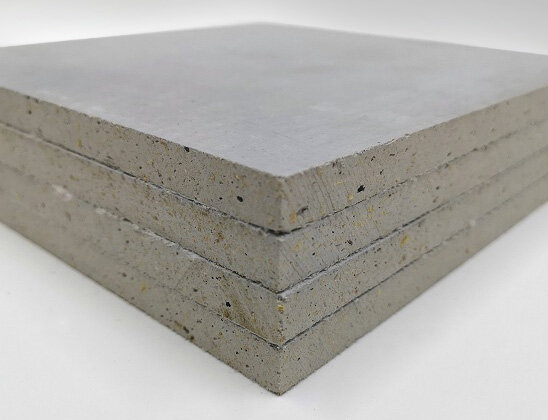

Protection for demanding applications
ArkiShield is Arkitor's mineral protective platform for applications where non-combustible construction, water resistance, impact durability and long-term dimensional performance matter.
Roofing ready
Suitable for roofing cover-board and related protective applications when specified as part of the correct assembly.
Suitable for roofing cover-board and related protective applications when specified as part of the correct assembly.
Moisture durable
Designed for wet and demanding conditions with waterproof options available by product configuration.
Designed for wet and demanding conditions with waterproof options available by product configuration.
Exterior planning
Applicable to soffits and selected exterior-envelope uses with the required coating, detailing and assembly design.
Applicable to soffits and selected exterior-envelope uses with the required coating, detailing and assembly design.

Specify the right configuration
ArkiShield is available in multiple thicknesses, sizes, edge profiles and surface treatments depending on the intended use. Exterior and roofing applications require the correct coating, flashing, drainage and assembly details.
Do not rely on a generic board claim for fire, water or structural performance. Request current approved technical information for the exact product and assembly being evaluated.